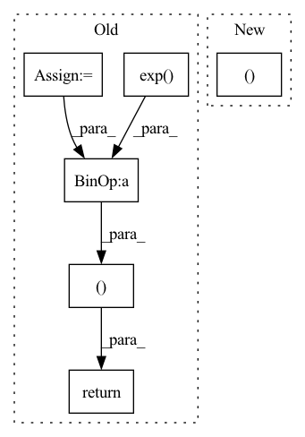

Pattern ID :2950

Before Change
def forward(self, audio, audio_len):
if random.random() < 0.2:
audio_mask = (torch.arange(audio.shape[1], device=audio.device)[None, :, None] < audio_len[:, None, None]).float()
x = torch.exp(audio - 1e-6) * audio_mask
y = torch.cat([x[1:], x[:1]])
return torch.log(0.9 * x + 0.1 * y + 1e-6) * audio_mask, audio_len
return audio, audio_len
After Change
assert len(audio.shape) == 3
if self.do_timestretch and random.random() < AUGUMENT_RATE:
audio, audio_len = self.timestretch(audio, audio_len)
if random.random() < AUGUMENT_RATE:
audio = self.pitchshift(audio)
if random.random() < AUGUMENT_RATE:
In pattern: SUPERPATTERN
Frequency: 3
Non-data size: 6
Instances
Fragment ID: 9753172
Project Name: kaiidams/voice100
Commit Name: dfe0234fcc858357cb2a91bcba1da06792eabab7
Time: 2021-06-25
Author: katsuya.iida@gmail.com
File Name: voice100/audio.py
M Class Name: BatchSpectrogramAugumentation
N Class Name: BatchSpectrogramAugumentation
M Method Name: forward(3)
N Method Name: forward(3)
M Parent Class: nn.Module
N Parent Class: nn.Module
M File Name: voice100/audio.py
N File Name: voice100/audio.py
M Start Line: 73
M End Line: 78
N Start Line: 80
N End Line: 95
'>
Before Change
a = F.relu(self.fc1(state))
a = F.relu(self.fc2(a))
mu = self.mu_head(a)
mu = torch.clip(mu, MEAN_MIN, MEAN_MAX)
log_sigma = self.sigma_head(a)
log_sigma = torch.clip(log_sigma, LOG_STD_MIN, LOG_STD_MAX)
sigma = torch.exp(log_sigma)
a_distribution = Normal(mu, sigma)
action = a_distribution.rsample()
logp_pi = a_distribution.log_prob(action).sum(axis=-1)
logp_pi -= (2 * (np.log(2) - action - F.softplus(-2 * action))).sum(axis=1)
logp_pi = torch.unsqueeze(logp_pi, dim=1)
action = self.max_action * torch.tanh(action)
mu = torch.tanh(mu) * self.max_action
return action, logp_pi, mu
def get_log_density(self, state, action):
a = F.relu(self.fc1(state))
a = F.relu(self.fc2(a))
After Change
a_dist, a_tanh_mode = self._get_outputs(state)
action = a_dist.rsample()
logp_pi = a_dist.log_prob(action).sum(axis=-1)
return action, logp_pi, a_tanh_mode
def get_log_density(self, state, action):
a_dist, _ = self._get_outputs(state)
action_clip = torch.clip(action, -1. + EPS, 1. - EPS)
'>
Fragment ID: 9753175
Project Name: ryanxhr/dwbc
Commit Name: b3791e408af7125fde12cda1cdeaefbaa400aacc
Time: 2022-06-30
Author: xuhaoran8@jd.com
File Name: algos/DWBC.py
M Class Name: Actor
N Class Name: Actor
M Method Name: forward(2)
N Method Name: forward(2)
M Parent Class: nn.Module
N Parent Class: nn.Module
M File Name: algos/DWBC.py
N File Name: algos/DWBC.py
M Start Line: 35
M End Line: 52
N Start Line: 51
N End Line: 54
'>
Before Change
mel_loss = (mel_iter_loss / (self.L * mel_lens_targets)).mean()
// Duration Loss
duration_loss = self.lambda_ * (self.mae_loss((torch.exp(log_durations) - 1).sum(-1), mel_lens_targets) / src_lens_targets).mean()
// KL Divergence Loss
beta = torch.tensor(self.kl_anneal(step))
log_vars, mus = log_vars.masked_select(src_masks.unsqueeze(-1)), mus.masked_select(src_masks.unsqueeze(-1))
kl_loss = -0.5 * torch.sum(1 + log_vars - mus.pow(2) - log_vars.exp())
// Residual Attention Loss
attn_loss = self.guided_loss(attns.transpose(-2, -1), src_lens_targets, mel_lens_targets)
total_loss = (
mel_loss + duration_loss + beta * kl_loss + attn_loss
)
return (
total_loss,
mel_loss,
duration_loss,
kl_loss,
attn_loss,
beta,
)
After Change
)
return (
total_loss,
mel_loss,
duration_loss,
kl_loss,
beta,
)
'>
Fragment ID: 9753171
Project Name: keonlee9420/parallel-tacotron2
Commit Name: 2c2f8c0876192de39c8e6d3c4f579dc68a50a678
Time: 2021-05-25
Author: keonlee9420@gmail.com
File Name: model/loss.py
M Class Name: ParallelTacotron2Loss
N Class Name: ParallelTacotron2Loss
M Method Name: forward(4)
N Method Name: forward(4)
M Parent Class: nn.Module
N Parent Class: nn.Module
M File Name: model/loss.py
N File Name: model/loss.py
M Start Line: 50
M End Line: 91
N Start Line: 48
N End Line: 86